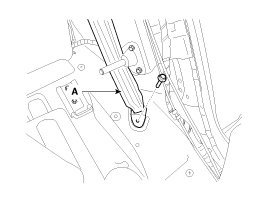
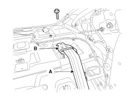
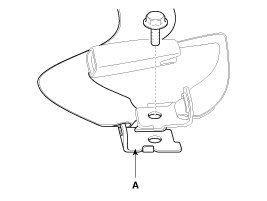
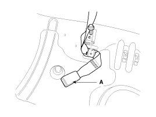
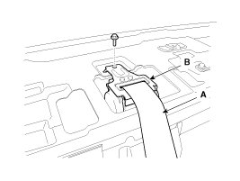
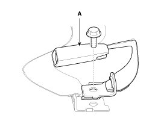
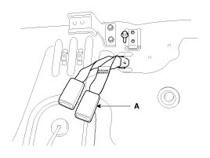

Rear Seat Belt
Replacement
Rear Seat Belt Replacement
CAUTION:
- When installing the belt, make sure not to damage the retractor.
1. Remove the following items first.
A. Rear seat
B. Rear pillar trim
C. Rear door scuff trim
D. Luggage partition trim
E. Rear wheel house trim
F. Package tray trim
2. After loosening the mounting bolt, then remove the rear seat belt lower anchor (A).
Tightening torque :
39.2 - 53.9 N.m (4.0 - 5.5 kgf.m, 28.9 - 39.8 lb-ft)

3. After loosening the retractor (B) mounting bolt, then remove the rear seat belt (A).
Tightening torque :
39.2 - 53.9 N.m (4.0 - 5.5 kgf.m, 28.9 - 39.8 lb-ft)

4. Installation is the reverse of removal.
NOTE:
- Replace any damaged clips.
Rear Seat Belt Replacement [Center]
CAUTION:
- When installing the belt, make sure not to damage the retractor.
1. Remove the following items first.
A. Rear seat
B. Rear pillar trim
C. Rear door scuff trim
D. Luggage partition trim
E. Rear wheel house trim
F. Package tray trim
2. After loosening the mounting bolt, then remove the rear center seat belt lower anchor (A).
Tightening torque :
39.2 - 53.9 N.m (4.0 - 5.5 kgf.m, 28.9 - 39.8 lb-ft)
[A type]

[B type]

3. After loosening the retractor (B) mounting bolt, then remove the rear center seat belt (A).
Tightening torque :
39.2 - 53.9 N.m (4.0 - 5.5 kgf.m, 28.9 - 39.8 lb-ft)

4. Installation is the reverse of removal.
NOTE:
- Replace any damaged clips.
Rear Seat Belt Buckle Replacement
1. Remove the rear seat cushion.
2. Loosen the mounting bolt, and then remove the rear seat belt buckle (A).
Tightening torque :
39.2 - 53.9 N.m (4.0 - 5.5 kgf.m, 28.9 - 39.8 lb-ft)
[LH]
(A type)

(B type)
[RH]

3. Installation is the reverse of removal.